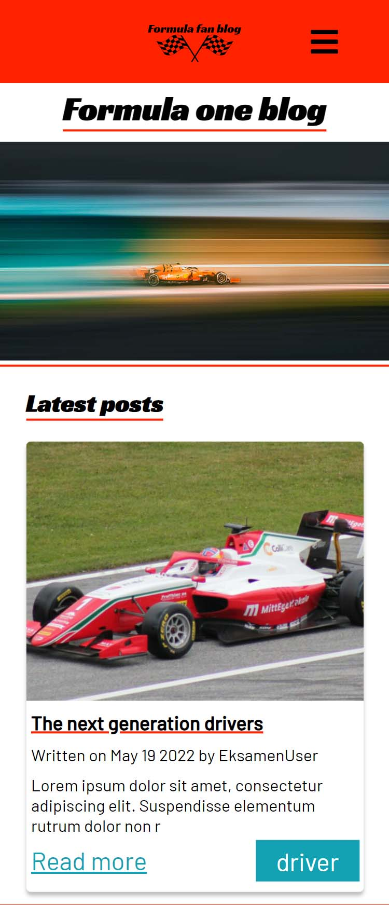
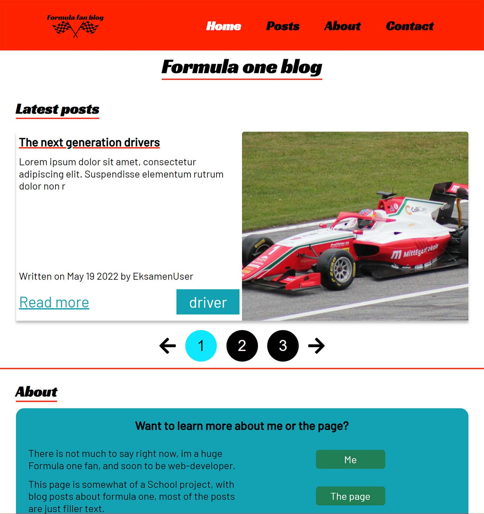
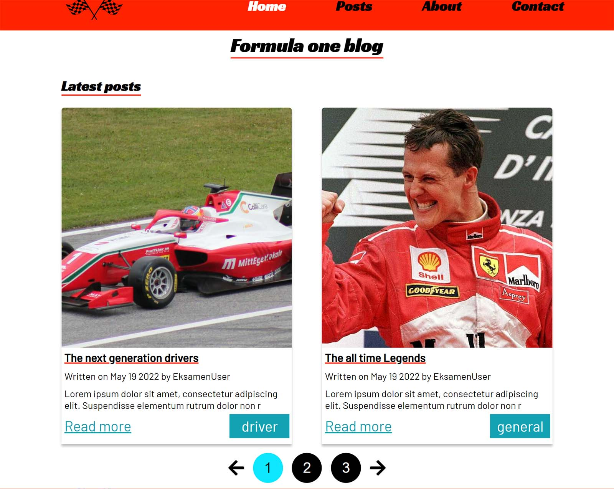

How it looks
Take a look at some of the screenshots on the diffrent screen sizes, there is also a link at the top and bottom to look at the page yourself.
Mobile devices
The small width of phones helps fill the page with content.
Tablet and medium sized devices
Here you can see the carousel, that shows the newest post, and you can choose to click to see the next posts.
Laptop and desktop
With a lot more space, the carousel now shows multiple posts at once, while still keeping the look almost the same
